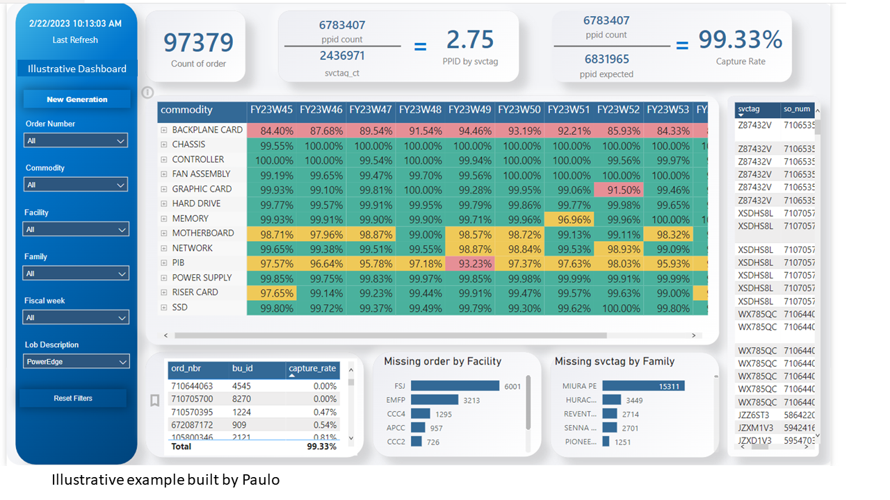
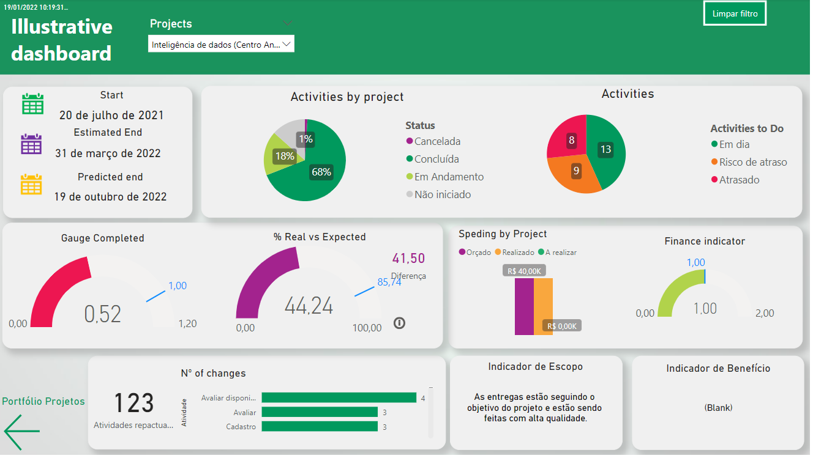
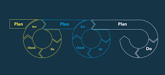

My last job was in Data Engineering, working with data modeling and data enablement for Thoughtspot (AI data viz tool). In this position, I developed several models for the business. The business users should rise a ticket with the desire for a specific dataset, by example the combined costs of a line of business. For the tickets like that, it was required to comprehend the business need, and also investigate which tables contain the desirable data. In some cases would request to build views or even connect to different sources to create an optimized dataframe.In those cases it was necessary to go to python and explore the possibilities with airflow. Once with the proper data then came the fun part of modeling, with the fact tables, dimension tables, joins, group, and creating a data frame that would answer what was required.
My last job was in Data Engineering, working with data modeling and data enablement for Thoughtspot (AI data viz tool). In this position, I developed several models for the business. The business users should rise a ticket with the desire for a specific dataset, by example the combined costs of a line of business. For the tickets like that, it was required to comprehend the business need, and also investigate which tables contain the desirable data. In some cases would request to build views or even connect to different sources to create an optimized dataframe.In those cases it was necessary to go to python and explore the possibilities with airflow. Once with the proper data then came the fun part of modeling, with the fact tables, dimension tables, joins, group, and creating a data frame that would answer what was required.
 When I become an Analyst at Dell, I had the pleasure of meeting extraordinary people that gave me the opportunity to work in one of the most challeging projects at the Traceability of Global Operations. After 6 months I developed a solution that provided me recognitions and the Customer Rockstar Award by Dell's VP. Before the project there was no visibility if a part number was capture at facility level, the impact of that could be huge. None has done it before because the data was confused, there was no clear path, it was necessary expertise in data and time to work exclusively on that. I digged deep in the data in several datasources to create a data model that would track all the part numbers using SQL, Python and Airflow. The end result I displayed in a Power BI report with a easily user interface where the business user could identify if there was an issue in any Dell's factories, and what was the issue if it was that a factory was not scanning it or if there were any database inside Dells was facing issue to send the data to the data lake.
At Unimed I was able to explore Power BI at my full capacity, leading to my certification of Microsoft Data Analyst in Power BI. I was allocated to the Analytics Office responsible to gather requirements of the business users and creating Power BI reports. I had the privilege to be part of the team that promoted a digital transformation at a company of 3000 employees.
During my period in LinkedRH, I had to put all my SQL knowledge into practice. I was holding the position of database assistant working with multiple customers that hosted their HR database with us. At LinkedRH I was responsible to create SQL queries to use in their inside tool of data visualization, based on customer feedback. This was my first opportunity to look at data and extract useful information.
This internship gave me so much learning and growing, I am very grateful for the opportunity that Bosch provided. It was the 1st time that I visited another country and it was amazing! I could improve my English communication and put into practice what I've learned in my bachelor's. I applied a PDCA cycle with an A3 solving problem sheet to improve and establish a process to create epoxy resyn that had previously 30% of success, after some cycles I was able to achieve 70% of success.
 My first internship was in Bosch, working with outstanding people in agile project management, where I could get the Scrum Master certification. I had the privilege to work on a start-up inside Bosch to develop a digital solution for livestock. The project involved software and hardware development, commercial and supply chain. I was supporting the Scrum Master during my first 6 months after that I assume the project and faced the challenge to be respected as Scrum Master being an intern. Professionalism and seriousness were key to sucess and receive the opportunity to go to another internship in Germany.
My first internship was in Bosch, working with outstanding people in agile project management, where I could get the Scrum Master certification. I had the privilege to work on a start-up inside Bosch to develop a digital solution for livestock. The project involved software and hardware development, commercial and supply chain. I was supporting the Scrum Master during my first 6 months after that I assume the project and faced the challenge to be respected as Scrum Master being an intern. Professionalism and seriousness were key to sucess and receive the opportunity to go to another internship in Germany.